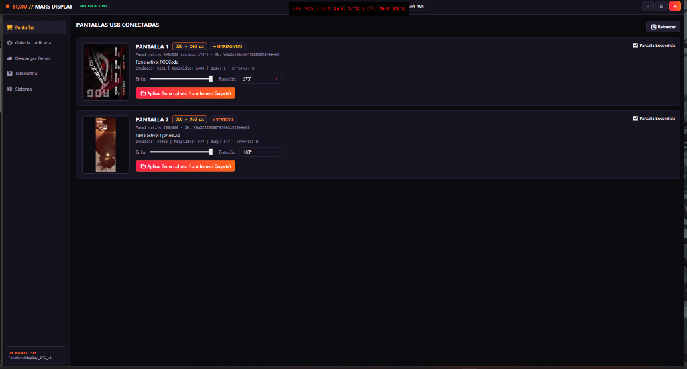
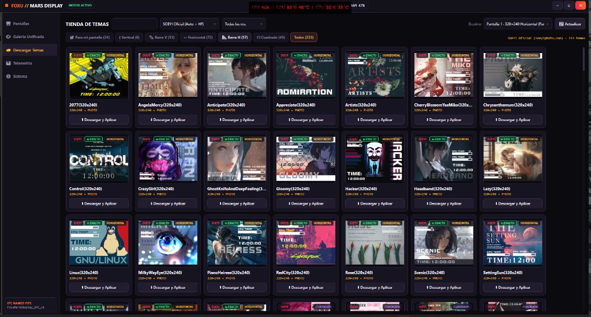

~0.6% CPU~60 MB RAM233+ cloud themesZero UAC5 languages
Screenshots

Connected USB displays with live preview, brightness and rotation.

Cloud theme store with orientation and resolution filters.Unified gallery: filter, zoom and apply in one click.Real-time CPU, GPU, RAM and network telemetry.